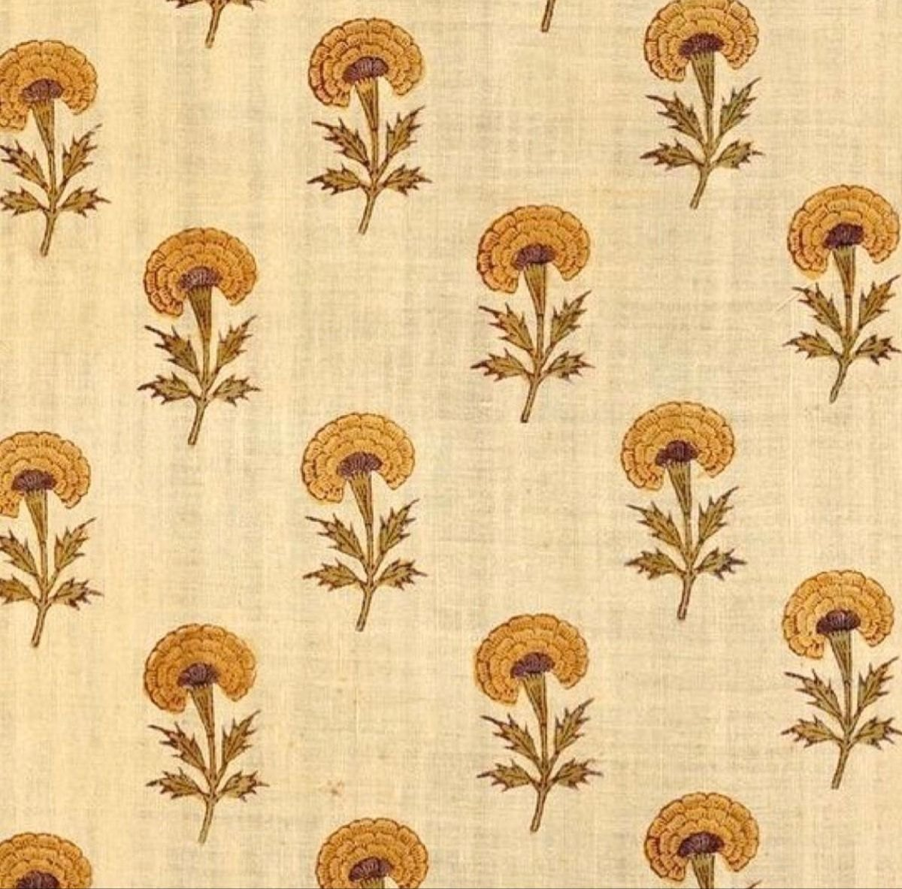
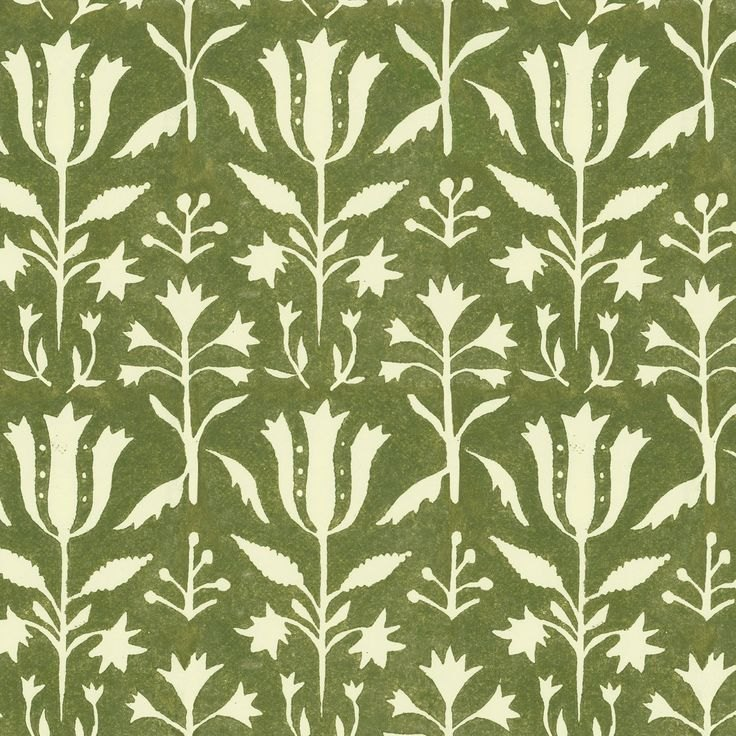
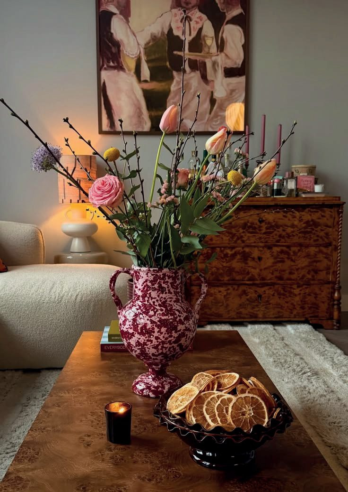

Entre l’Inde et la France
Une lettre de Tara, à lire comme on s’installe : en prenant le temps.


Maison de Tara est née bien avant d’avoir une adresse.
Elle est née dans les maisons que j’ai connues enfant, en Inde. Des maisons où l’on recevait beaucoup, où les tissus, les couleurs, les odeurs de cuisine et les objets racontaient toujours une histoire.
J’y ai découvert le plaisir de créer, d’accueillir et de prendre le temps. Le goût du fait main, de l’artisanat et des choses que l’on garde longtemps.


Plus tard, mes études en Australie m’ont ouvert à d’autres cultures, d’autres façons de vivre et d’autres manières de recevoir. Une curiosité qui ne m’a jamais quittée.
Puis la vie m’a menée en France. J’y ai construit notre vie de famille, aux côtés de mon mari et de nos trois enfants. J’y ai également passé près de 18 ans dans un univers professionnel très différent. Mais avec toujours cette envie de créer un jour un lieu qui me ressemble.
Pendant longtemps, cette idée est restée un rêve.
Et puis un jour, l’envie est devenue plus forte que les hésitations. J’ai décidé de me donner une chance. Et de transformer une idée qui m’accompagnait depuis des années en quelque chose de réel.

J’avais envie d’un lieu vivant. Un lieu où l’on se sent bien dès que l’on pousse la porte. Où l’on crée quelque chose avec ses mains, où l’on partage un café, où l’on découvre de belles choses pour la maison et où l’on prend simplement le temps.
C’est ainsi qu’est née Maison de Tara.
Une maison inspirée de mes racines indiennes, de ma vie en France, de mon amour pour l’artisanat, les belles tables et les moments partagés.
J’espère que vous vous sentirez ici comme je me suis toujours sentie dans les maisons que j’ai aimées : accueilli, inspiré et libre d’être simplement vous-même.
Bienvenue à la maison.
Tara
Envie de venir écrire la suite ?
Réserver un moment